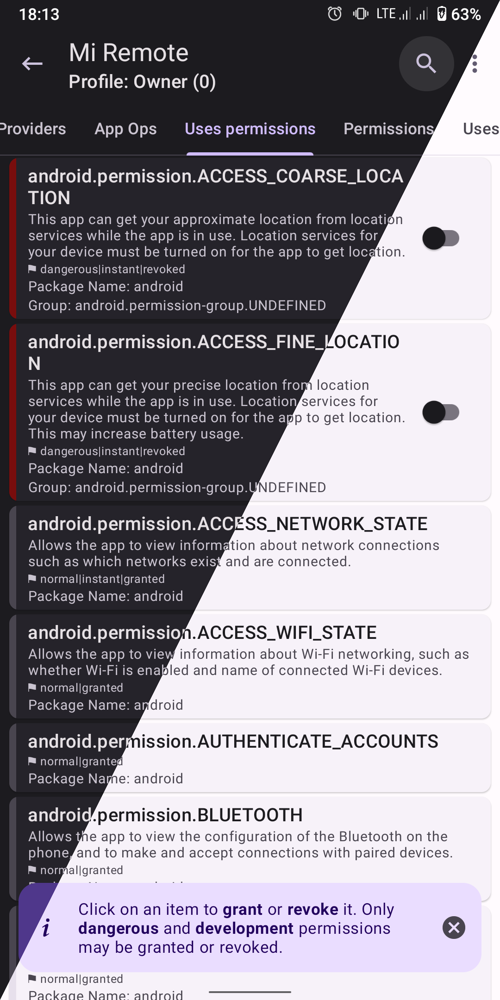
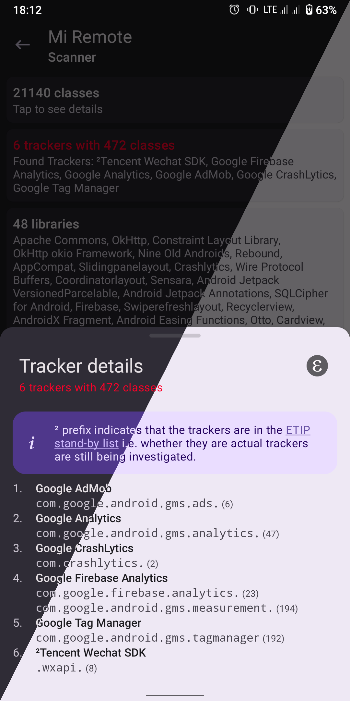

App Manager 藏了这么多进阶玩法，你还只拿它来备份？
大多数人装 App Manager 就是为了备份应用数据，其实它还藏着无线 ADB 配对、一键配置文件、Tasker 自动化这些冷门但实用的高级功能。
你以为 App Manager 就是个应用备份工具？把它翻到底才发现，藏在菜单深处的进阶功能比你想象的多得多。
我第一次接触 App Manager官网 也是冲着完整备份去的——从官方下载拿了安装包装上就开始试，毕竟系统自带的备份太残废，第三方备份又各有各的毛病。但用了半年多，慢慢摸到几个官方几乎不宣传的隐藏功能，每一个都让我"原来还能这样"。这篇把我挖到的私货整理出来，按冷门程度排。
藏在三点菜单里的配置文件：把十个操作变成一键
App Manager 的三点菜单大家都会点，但配置文件（Profiles） 这个入口大概率被跳过了——图标不起眼，名字也太泛，"配置文件"？配置啥？
我一开始以为就是个设置项的集合，点进去才发现这是个批处理触发器。具体玩法：
- 新建一个配置文件，给它起个名字，比如「省电模式」
- 然后勾选要执行的操作：冻结那十个预装耗电应用、清所有应用缓存、把网络策略改成后台 WiFi only
- 选好之后保存，就能给它创建桌面快捷方式
以后要清缓存，桌面点一下就完事了——批量操作在后台跑完，你该干嘛干嘛。
比批处理强在哪？批处理是临时的，每次都得手动选应用、勾操作；配置文件是持久化的，存好之后反复用、还能自动触发。我的建议：先拿批处理试试哪种组合适合你，试爽了存成配置文件。
能存的操作远不止清缓存——冻结解冻、卸载重装、备份恢复、阻止追踪器组件、设置 App Ops 权限模式、网络策略、电池优化……只要你的权限档（root 还是 ADB）支持，都能塞进配置文件里。

手机上就能配 ADB 无线调试，电脑可以扔了
如果你用过 ADB over TCP，肯定知道那个"先 USB 连电脑调 adb tcpip 5555 再拔线"的老流程——每次换设备都得来一遍，贼麻烦。
Android 11 内置了无线调试功能，但配对要扫二维码或者手动输配对码——App Manager 把这个流程直接做进应用里了，而且全程不用电脑、不用 USB 线。
具体怎么进：App Manager → 三点菜单 → 设置 → 操作模式 → 选 ADB over Wireless Debugging。然后 App Manager 会弹出二维码扫描界面，你到手机开发者选项里的无线调试设置页，点那个配对图标出二维码，App Manager 扫一下就配好了。配对码手动输也行，6 位数字加一个端口号。
配对成功之后，App Manager 就通过无线调试的 ADB 接口执行高权限操作——撤销危险权限、修改 App Ops 模式、清除数据、冻结解冻应用、拦截追踪器组件、联网策略……这些原本要么要 root、要么要电脑的事，现在手机上直接干。
说句实在的，ADB 档比 root 档少几个功能（比如编辑共享偏好、完整数据备份、SSAID 修改），但日常够用了——尤其是不想给手机 root 的人，这个配对方式简直是救命。权限档能做什么、不能做什么，App Manager文档 里列得很细，配之前先翻一下少踩坑。

配置文件还能自动触发，Tasker 直接调
手动点配置文件已经够方便了，但如果你有 Tasker 或者 MacroDroid，能让整个流程完全无人值守。
举几个场景你感受下：
- 手机充电时自动清所有应用缓存，出门断电前清理完毕
- 睡前定时自动把耗电应用设为受限电池优化模式，一晚上省出 10% 电量
- 连上 WiFi 自动冻结流量大户（比如那几个视频 App），同时解冻需要联网的
- 屏幕关闭 1 小时后自动执行隐私模式配置——拦截追踪器组件、把 App Ops 设为只前台允许
- 开机后自动备份数据 + 执行开机配置
通勤场景更爽：早上连蓝牙耳机 → Tasker 触发「通勤模式」→ 地图和通讯应用不受电池优化、游戏视频 App 全受限；晚上到家连家庭 WiFi → Tasker 触发「回家模式」→ 解冻游戏、恢复电池优化、清缓存。全程不用碰手机。
实现原理不复杂：App Manager 内部有一套带授权密钥的 Intent 接口。你先在 App Manager 设置的「高级 → 自动化」里生成一个授权密钥，然后在 Tasker 里创建一个发送 Intent 的动作，带上配置文件 ID 和授权密钥就行。Action 固定是 io.github.muntashirakon.AppManager.ACTION_TRIGGER_PROFILE，包名就是 App Manager 自己的包名。
App Manager v3.0 还加了网络触发能力——同一局域网里从电脑或另一台设备发 HTTP 请求就能触发，连 Tasker 都不用。
备份恢复的几个坑，踩过就懂了
说完好用的功能，必须提几个容易踩的坑——都是备份恢复失败的血泪教训。
加密备份没有找回密码的功能。 不管你用的是 AES 密码、OpenPGP 私钥还是 App Manager 内置的 RSA/ECC 密钥——密码忘了、密钥丢了，备份就是废的。特别是 RSA/ECC，因为密钥存在 Android KeyStore 里，卸载 App Manager 直接清掉，这个备份永远解不开。我的做法是加密备份统一用 OpenPGP，私钥导出后存密码管理器和网盘各一份。
恢复至少需要两倍备份大小的临时空间。 解压到临时目录、复制到 /data/data/、清理，假设备份 200MB，最好保证 500MB 可用空间。恢复前记得先去存储设置里确认一下。
恢复后闪退大概率是数据 schema 不兼容。 新旧版本数据库字段变了、Shared Preferences 键值改了，新版按新 schema 读旧数据，遇到不认识的就崩。解法：卸载 → 装新版但不恢复 → 打开让它自己初始化一遍 → 再看能不能只恢复部分数据。如果是 root 档，还可以用共享偏好编辑器对比新旧 SP，删掉新版不认的旧键。
权限不够别强求完整恢复。 无 root 情况下，完整数据恢复基本不可用——你在 App Manager 里看不到完整恢复选项就是权限不够的信号，别硬来。
权限档决定上限
最后提一句，上面说的功能能不能用、能用多少，全看你的操作模式：
- Root 档：全部解锁，含完整备份、编辑共享偏好、SSAID 修改、全部组件拦截
- ADB over Wireless Debugging：日常够用，比 root 少几个功能，不用 root 不用电脑
- ADB over TCP：需要电脑先 USB 调一下，跟无线配对比麻烦不少
我个人建议：能 root 就 root，不想 root 就花五分钟配个无线 ADB——这俩都比只看个备份强得多。
App Manager 真不是只有备份工具那点能耐，把上面几个功能摸透，手机日常维护效率能翻几倍。国内访问有时候 GitHub 会抽，相关资料在 GitHub、Gitee、GitCode 三个仓库都有镜像，挑能连上的看就行。